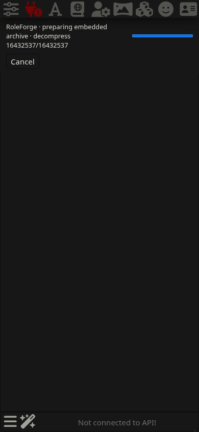
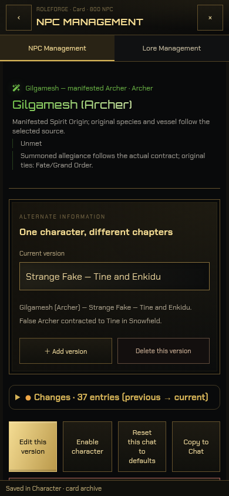
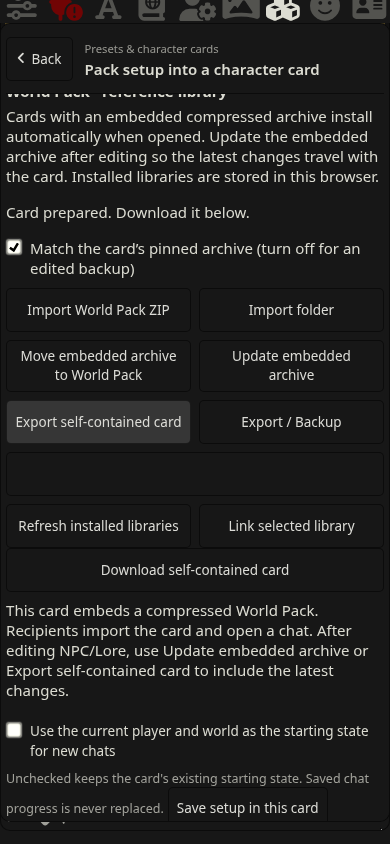
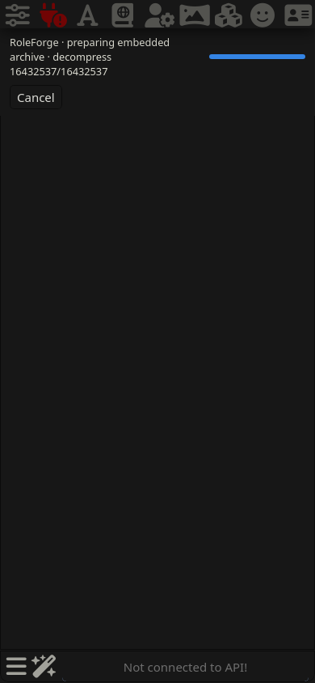
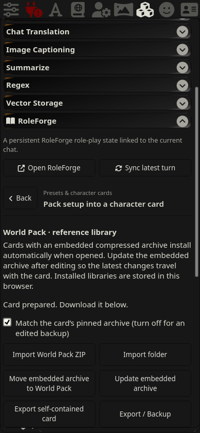
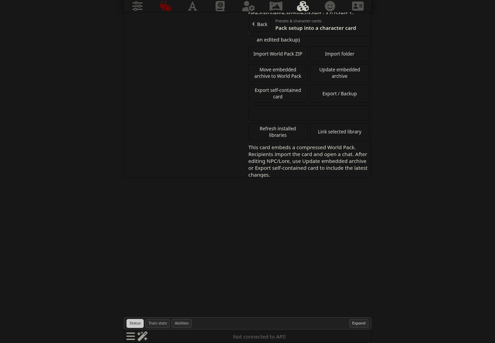

การ์ดไฟล์เดียว · World Pack อัตโนมัติ
ภาพจาก SillyTavern 1.19.0 ที่รันส่วนเสริม production บน Linux · Chromium / WebKit · 800 NPC / 1,771 เวอร์ชัน / 178 Lore / 4,329 supplements
ผลตรวจและข้อจำกัด · วิธีใช้และรูปแบบ payload

Chromium · เปิดการ์ดแล้วเตรียมคลัง พร้อมยกเลิก
เปิด NPC / เปลี่ยนเวอร์ชัน / แก้ข้อมูล
Update / Export และลิงก์ดาวน์โหลดการ์ด JSON
WebKit · ติดตั้งจากการ์ดใน context ที่ไม่มีคลัง
WebKit · เตรียมดาวน์โหลดและย้ายการ์ดไป context ใหม่
Desktop 1440 × 1000 · คงรูปแบบ native SillyTavern drawerViewport มือถือจำลอง ไม่ใช่ภาพจาก iPhone จริง ไม่มีการเรียกโมเดลผ่าน proxy ในชุดตรวจนี้